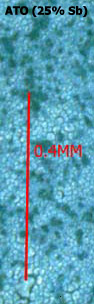
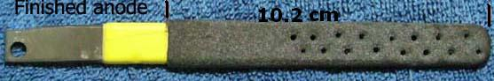
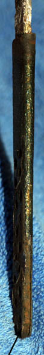
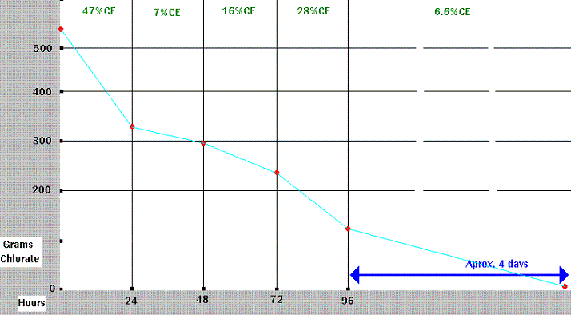
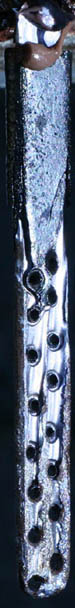

|  |
The etched Ti was then coated with 9 coats (9 bakes) of ATO (Antimony/Tin Oxide) using a standard ATO precursor solution of SnCl4:5H2O + Sb Trichloride + HCl + Alcohol. [Read the information regarding Tin Oxide coatings
in the Tin Oxide Anode section] The ATO precursor solution was made up of:
(25% Sb in ATO precursor as per the DS Patents) The Alcohol and HCl should be mixed first. The Sb Trichloride was made from Sb Trioxide as described elsewhere on this page. The ATO solution was brushed on to the Ti and the Ti let drip dry by hanging for five minutes. The Ti was then given a good shake or sharp knock(s) on a clean surface to get rid of excess solution. The Ti was then dried using a heat gun. It is important to keep the Ti moving when drying, to stop the ATO precursor from forming puddles. Another coat of ATO precursor was put on as before and dried using the heat gun. This was done a third time. The Ti was then baked at 480C to 490C for approx. seven minutes. This was repeated a further 8 times. When the 9 coats were finished the Anode was given a final bake at 490C for one hour. The substrate had now received a total of 9 bakes, 3 coats per bake. The Ti had now a black/blue coating that looked like cracked mud under 100X magnification. A bright purple color indicated where ATO has not been applied successfully. Some parts showing this color will be inevitable. If this was a first attempt at applying an ATO coating to Ti it would be prudent to test the coating to see if it has been applied successfully. |
A coating of Alpha Lead Dioxide was now applied by using a Lead Tartrate bath. The Lead Tartrate bath was made up from:

Some Notes on making the Anode:
Set up you bath first using water to see if stirring will successfully keep ceramic particles in suspension.
Use a larger size of grit to help stop it being incorporated into coating. A less dense grit may be needed if this is done.
The bath must be deep enough to accommodate the Anode and cathodes + allow room for stirring bar (if using a magnetic stirrer).
Keep additions of water as small as possible to keep bath temp. steady or better to add water preheated to the bath temperature.
Evaporation from Alpha bath can be bothersome. Floating some plastic material (Polystyrene?) on the surface may help to slow it down.
Keep an eye on Lead deposition on cathodes in Beta bath. If it should start add more Copper Nitrate. Using Copper cathodes will also cure the problem.
Connect both Cathodes to power source.
A thicker coating of Lead Dioxide than above should be used.
A larger plating current density should be used.
A bigger bath and/or addition of Lead Compound should be used. The Nitric acid formed when the 31 grams of Lead Dioxide was deposited was equal to 16.34 grams. This represents an acid concentration increase of 20.42 grams per liter (800ml tank used) which gives a total acid concentration of approx. 24 grams per liter at the end of the plating session. This is too high. The 31 grams of LD deposited represents a plating current efficiency of 63%. The acid concentration may have been higher than the 24 grams per liter as Nitrites being oxidized at the Anode causes more acid to form.
|
First 'Holy Grail' cell run
|
The Anode was used in a Na (Per)Chlorate cell that was let run from Chloride all the way to Perchlorate with no pH control. The cell was 2.25 litres containing saturated salt solution,
approximately 760 grams or 13 moles NaCl. NaF (4.2g) and Sodium Persulphate (4.2g) was added to the cell. Anode current density was from 200 to 300mA per square cm with an average current into cell of 9.5 amps. Cathodes were Titanium. The Chlorate conversion current efficiency (when Chloride concentration was high) was poor at 20%. The temperature was in the region of 52C. Lowering the temperature to 32C helped somewhat, CE increased to 26%. Lowering the current density to 100mA per square cm (4 amps) did not help, in fact the CE decreased further. The cell was run for 10 weeks using the 5V output of a computer power supply with the cell at approx. 40C. A resistor was used at the start of the cell run to keep current at around 10 amps as it was inclined to get high. The Chlorate level at the end of the run was very low at less that a few grams per liter and the Chloride level was approx. 6 grams per liter. A quantity of Lead (I presume) collected on the cathodes and had to be removed during weeks 7/8, see picture. This Lead weighed 6.7 grams when washed, dried and weighed. A total of 0.3 mm was wore off the Anode surface. A quantity of brown ppt (probably Lead Dioxide) was sitting on the cell bottom with the Perchlorate containing liquid clear. The brown sediment at the cell bottom was 6.3 grams when washed, dried and weighed. Aluminum Oxide abrasive could be seen in the sediment. The Aluminium Oxide was used when the Anode was being made in order to keep bubbles formed swiped off the Anode. The abrasive had been incorporated into the coating as the Anode plated with Lead Dioxide. The overall current efficiency for the conversion of the Chloride to Perchlorate was 17% (industry gets 50% to 62% for this type of run with pH control). There was a smell of Ozone coming from the cell for the last 3 or 4 weeks of its run. Cathode area was large. The backs of the Cathodes were exposed and although the Cathodes were made from Titanium the actual active surface area of the Cathodes was Lead. This may have had an undesirable effect on CE even though additives were added to hinder reduction (conversion of Perchlorate back into Chlorate) at the Cathode. |
 Pure Perchlorate cell
The Anode was tested in a cell for making Na Perchlorate from Na Chlorate. The cell was 880ml in volume containing 520 grams (~5 moles) Na Chlorate + approx. 17 grams Chloride as the Chlorate was home produced. Three grams NaF was added to cell. The cell was placed into a bucket containing some water to keep the temperature at 40 to 50C.
The 5v output of a computer power supply was used to drive the cell with a current of approx. 8.1 amps (average over run) going into cell.
Ten Moles of electrons ( 26.8 x 10 = 268Ah) would be required to convert the 5 Moles Chlorate to Perchlorate giving the cell a run time of
33 hours @ 100% CE (current efficiency).
The diagram below shows Chlorate destruction per hour.

CE on day one was 47%. The CE was strangely low on day two at 7%. Day three 16%, day four 28%. The cell was run for approx. 4 more days with a CE of approx. 7%. The final Chlorate concentration was 11 grams per liter. The pH of the cell always drifted
to a value of approx. 10.8. HCl was added now and then to reduct pH to neutral but no serious attempt was made to keep pH neutral. According to studies
pH is not relevant to CE, perhaps it is relevant when the concentration of Chlorate is low, which may account for the CE's obtained as a number of additions of HCl were made on day three as opposed to just one addition on day two?? According to Schumacher, 'The Perchlorates', all commercial Perchlorate cells are pH controlled at around neutral.
After 32 hours of operation a 'yogurt ptt' was observed when KCl solution was added to a cell sample.
The Anode was eroded from the beginning of the run with brown LD deposited on the bottom of the cell. There was some Lead metal deposited on the Cathodes too. Anode wear was greatest at the bottom, perhaps stirring the cell would have helped. Anode wear can be seen in the picture with exposed Ti at the arrow. The exposed Ti still had a coating of Tin Oxide that was active ie. bubbles when observed coming from the Tin Oxide when the Anode was in the cell. This may have kept the CE low as Tin Oxide is a bad Perchlorate making Anode. It seems to just make Oxygen.
Cathode area was large. The backs of the Cathodes were exposed and although the Cathodes were made from Titanium the actual active surface area of the Cathodes was Lead. This may have had an undesirable effect on CE even though additives were added to hinder reduction (conversion of Perchlorate back into Chlorate) at the Cathode. Since the Lead metal deposited onto the Cathodes was fluffy this would have increased the Cathode surface area greatly which may have further decreased CE.
Second 'Holy Grail' cell run
Another cell run was performed with pH control, using the same Anode and Cathode set up as pictured above. Current into the cell was in the region of 5.5 Amps with 2.25 litres in the cell. No additives were added to the cell until the Perchlorate stage was running for approx. 7 days (6g of NaF added, 2.6g/l). It should be noted that the Anode at this stage had approximately 50% of the Titanium substrate exposed as depicted in the picture above under 'Pure Perchlorate cell'. Some of this exposed Titanium still had a coating of Tin Oxide on it. This would have lowered CE. The Cathodes were large in comparison to the shrinking Anode surface area. There was fluffy Lead deposited on the Cathodes which increased surface area even more. This would not have helped CE.

The cell run lasted for 48 days. Perchlorate appeared at day 23.
The Anode system itself performed OK as the Titanium did not passivate under the Lead Dioxide.
The CE during the main Chlorate stage of the cell peaked at 80% (occurred over the first two days).
The CE during the main Perchlorate stage peaked at 55% (occurred 15 to 18 days after Perchlorate appeared in cell).
The overall CE during the Chlorate stage was 52%.
The overall CE during the Perchlorate stage (Chlorate going to Perchlorate) was 25%.
The overall CE (end of cell run deemed to be at 10 grams per liter Chlorate) was 42.6% (Industry gets approx. 55% to 64% for this type of operation).
The CE was 10% over the period where Chlorate was decreased from 22gpl to 10gpl.
The CE was 4.2% over the period where Chlorate was decreased from 10gpl to 5gpl.
The Chloride concentration was 13gpl at the end of run.
A period of approx. 4 days (when cell was at the inbetween stage of Chlorate/Perchlorate) was left out of the calculations of CE for both the 'Chlorate' stage and the 'Perchlorate' stage. This period was of course counted in the overall CE calculation.
The acid demands of the cell during the Chlorate stage were somewhat less that a Graphite/MMO Anode cell (pH ~ 6.5 - 7.0) at 0.09 ml per hour per amp (12% HCl) but the cell never reached a point where acid could be stopped. Small amounts were still needed during the latter days of the Chlorate stage. When the Cell entered the Perchlorate stage the acid demand was up to approximately 0.42 ml per hour per amp (pH was kept at around 7.4 at this rate of addition). If acid was turned off the pH climbed to 10.8 within a few hours. When I added the 6 grams of NaF the acid demand decreased to 0.3 ml per hour per amp. As the cell ran further into the Perchlorate stage the acid demand decreased to 0.1 ml at per hour per amp for the last 5 days. This rate towards the end kept the cell between pH 6 and 7. Note that adding HCl acid at the Perchlorate stage adds Chloride which is not desirable.
The exposed Ti surface was getting eroded as can be seen in the picture. There was a large amount of fluffy grey stuff on the cell bottom from the eroded Ti. There are a few deep erosion streaks like river erosion going up the Anode. NaF was blamed for this.
The Anode has clocked up over 4 months in Chlorate and Perchlorate cells. It still has some running time left.
End of Anode life cell run
The Anode was shelved for approx. 6 months and placed into a Perchlorate cell from a previous Graphite Anode cell (liquor which was taken to 30 grams per liter Sodium Chloride from a saturated solution of Chloride). The Anode was as depicted in the picture above. It ran for approx. 3 weeks at 1.75 Amps until the last of the Lead Dioxide fell off. The Lead Dioxide fell of in two slabs of approx. 1.4cm squared each. There were no drilled holes in the Ti substrate at the top of the Anode where this LD was. The thickness of the LD that fell off was measured to be approx. 1.3mm.
This compares to a starting thickness of approx. 1.5mm in that top area when the Anode was new. There was no visible erosion of the Ti substrate. The cell contained no Fluoride which was blamed for Ti erosion in the previous cell run. There are still parts of the Anode with LD still clinging to it around the holes etc. There are also areas of the Ti which still have Tin Oxide on them as they are gassing when current is passed. No tests for CE were made. Some brown deposit of LD can be seen on the cell bottom.
The Anode clocked up a total of 4.7 months of run time. Time to make a new one!
HIT THE BACK BUTTON ON YOUR BROWSER